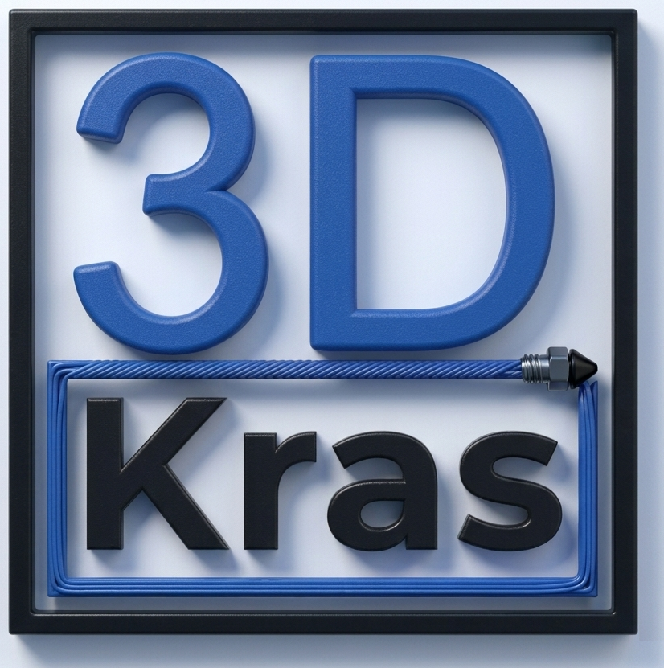
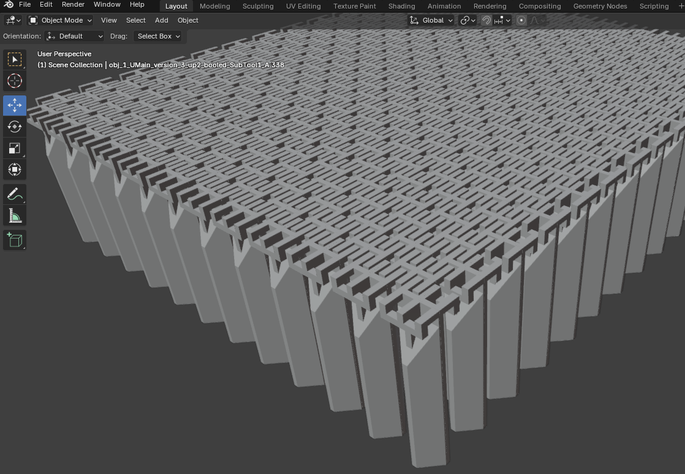
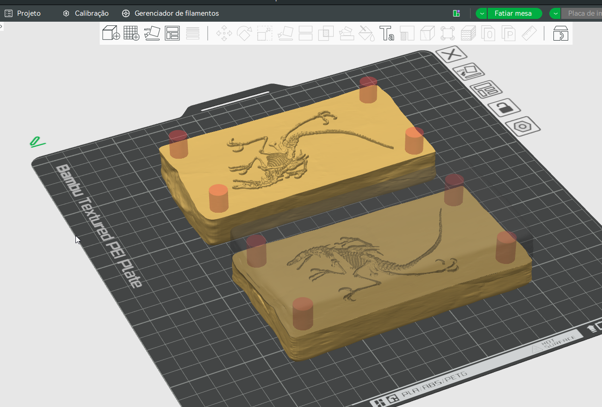

Dragão articulado flexível
Impresso em uma peça só, sem montagem — as juntas imprimem já móveis direto na mesa.
TPU 95A·14h de impressão·22 cm
100% concluído

arquivo.gcode — camada atual: 1 / ∞
Peças impressas em FDM, camada por camada. Brinquedos articulados flexíveis, protótipos funcionais e experimentos de modelagem — feitos em casa, testados na prática.
/ galeria
Uma seleção de peças, do prototipo à peça final. Troque as imagens e as fichas técnicas pelas suas.
Impresso em uma peça só, sem montagem — as juntas imprimem já móveis direto na mesa.

Peça funcional desenhada para resolver um problema específico da bancada de trabalho.

Protótipo de teste para validar tolerância de junta antes da peça final.
Copie um card acima, troque a imagem, o título e a ficha técnica.
/ fluxo de trabalho
Desenho a peça no Blender, pensando em como as juntas e articulações vão se comportar impressas.
Ajuste de altura de camada, suportes e orientação para imprimir articulações já móveis, sem montagem.
Acompanhamento das primeiras camadas e do decorrer da impressão — é onde a maioria dos problemas aparece.
Remoção de suportes, teste das articulações e ajustes finos antes da peça ir para a galeria.
/ sobre
Curioso por impressão 3D, com foco especial em brinquedos articulados flexíveis — peças que já saem da impressora se movendo, sem parafuso ou cola. No caminho, também fui aprendendo Blender para modelar minhas próprias peças do zero.
Esse espaço reúne o que vou imprimindo: experimentos, peças funcionais para casa e oficina, e alguns projetos que só existem porque eu queria ver se dava certo.
/ contato
Me chame para trocar ideia sobre um projeto, pedir uma peça sob encomenda ou só falar de impressão 3D.